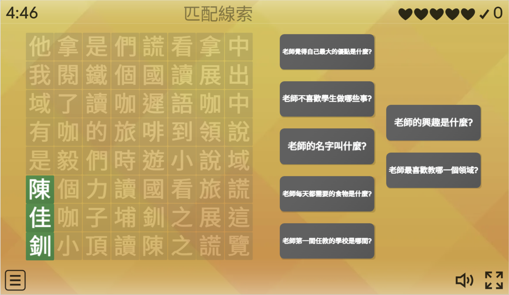

輸入一次
建立字詞、問答或配對內容，留下可重複使用的教材。
教學 × 數位 × 實踐力
一份題目，不只一種玩法。快速切換互動範本，提升課堂參與感。
ONE SET
一份題目
多種玩法
00｜認識講師
現任新北市頂埔國小教師，長期分享國語文教學與數位融入的課堂實踐，也是翻轉教育專欄作家。從 HiTeach、Padlet、Canva 到 Wordwall，把工具轉化為教師帶得走、學生用得上的教學策略。

從遊戲認識佳釧老師立即挑戰 ↗01｜認識 Wordwall
建立字詞、問答或配對內容，留下可重複使用的教材。
依辨識、排序、表達或評量任務，快速更換玩法。
用網址或 QR Code 分享，電腦、平板、手機都能參與。
從答題紀錄找出易錯概念，接續下一步教學。
從熟悉的教材開始
教師不必重新製作每一套遊戲；建立內容後，即可依課堂需要切換範本、分享活動並查看結果。
點選圖片可放大查看。
「遊戲是學習的載體，不是課堂的終點。」
02｜範本指引
Wordwall 提供 31 種活動範本，讓同一份題目能配合不同學習任務切換玩法。想讓學生辨識、排序、表達或檢核理解，都能找到合適的互動方式。
搜字、猜字、填字、翻轉卡片、配對、排序、問答與真假遊戲等。
句子排列、飛機、測驗、輪盤、開箱、打地鼠與連詞造句等。
點選任一張範本圖片，即可放大查看完整名稱。
核心互動｜一對一概念連結、快速提取與辨別
適合生字語詞、多音字辨析、部件拆解、成語釋義、數學公式與名詞定義。
核心互動｜線性邏輯排列、屬性歸納與結構化
適合語序重組、段落重構、歷史或科學流程排序，以及詞性或概念類別劃分。
核心互動｜隨機抽取、不可預期性與高懸念
適合課堂隨機抽問、觀點分享、情境寫作題目抽取，以及家長日破冰發言。
核心互動｜限時作答、即時回饋與後台數據統計
適合課前先備經驗檢測、課中文意理解檢核、單元評量與學力檢測題庫練習。
03｜核心展示區
從語文的字詞、句段、篇章與聽力，到數學計算練習，都能先看教學目標與範本類型，再直接開啟活動體驗。
在快速辨識中連結字音與語境，適合課前暖身或生字複習。
開始打地鼠 ↗從線索找出目標語詞，把詞義判讀變成有目的的搜尋任務。
開始搜字 ↗擴充情緒詞彙，讓口語表達與寫作有更精準的選擇。
開始挑戰 ↗拖曳重組語句，從語序、標點與語意線索理解完整句。
開始排列 ↗檢核訊息提取、推論與統整，適合段落閱讀後的即時回饋。
挑戰 10 題 ↗用 AI 依閱讀理解層次整理題目，再匯入 Wordwall 形成文本檢核。
查看示例 ↗播放口述或音檔，再以配對、排序或選擇題檢核關鍵訊息。
前往 Padlet ↗透過快速作答熟練九九乘法，適合作為課前暖身、限時挑戰或課後複習。
開始乘法挑戰 ↗練習兩位數加法與進位概念，從即時回饋看見學生容易出錯的步驟。
開始加法挑戰 ↗04｜極速備課
一次只鎖定一項能力。
依學生要做的思考選玩法。
請 AI 協助快速生成題目內容。
修潤微調內容，再分享活動。
AI 會根據你分享的內容，推薦最接近的配對範本，再由你選擇適合課堂的玩法。
你是一位國小教師。請根據我貼上的文本，設計 10 題層次不同的四選一選擇題，協助學生理解內容、主旨與寫法。 請包含 PIRLS 四個閱讀理解層次：提取訊息、直接推論、詮釋整合、比較評估。每題提供四個長度相近且具鑑別度的選項，標示正確答案與理解層次，並使用繁體中文。
05｜後台分析
確認誰尚未完成或需要操作協助。
定位全班共同卡住的概念。
安排補救、再挑戰或同儕說明。
從參與人數、平均得分、各題正確率及分數分布，快速掌握全班學習概況。
比較每題答對與答錯人數，找出需要重新說明、回到文本或安排補救的題目。
點選後台圖片可放大查看完整數據。
07｜教學時機
用 3 題小測驗破冰。
盤點先備經驗。
每教一段就檢核。
依錯題安排下一步。